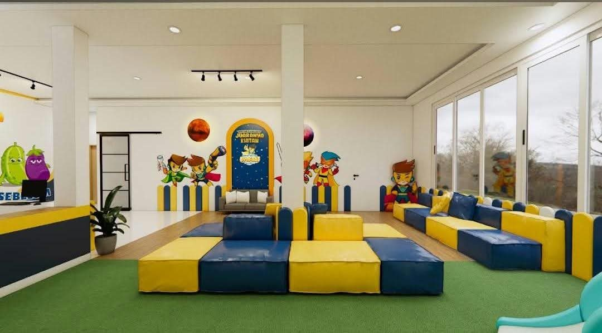
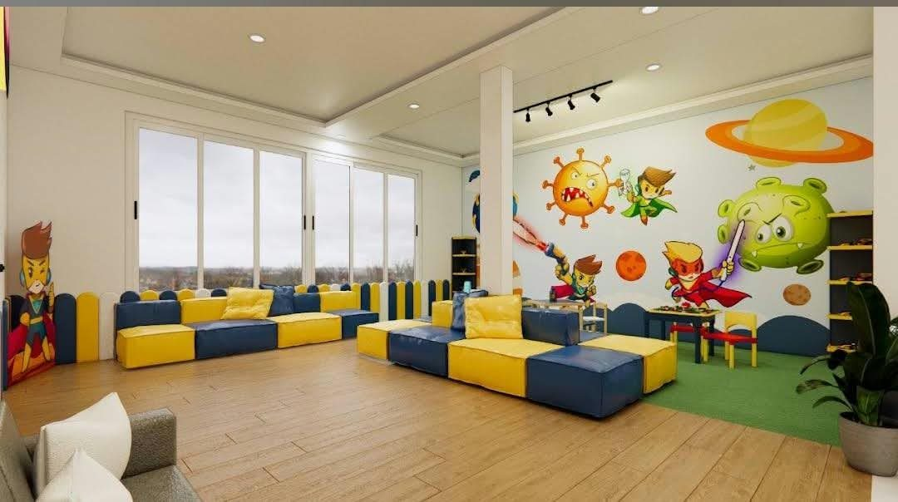
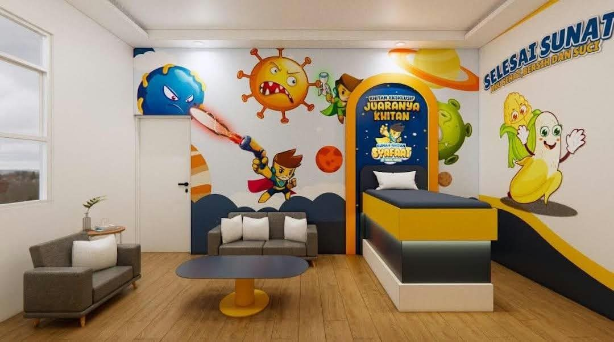
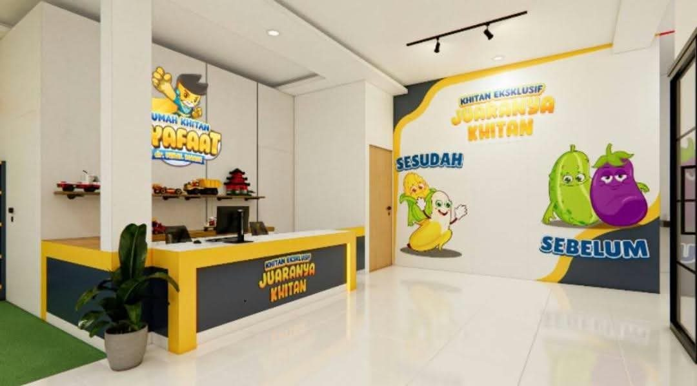

Pengalaman Khitan yang Lebih Nyaman untuk Buah Hati.
Rumah Khitan Syafaat Pakis menghadirkan suasana yang ramah anak dan pelayanan yang membantu orang tua menjalani proses khitan dengan lebih tenang.

Tempat yang Dirancang agar Anak Merasa Lebih Nyaman.
Ruang tunggu dan area bermain dibuat cerah dan bersahabat untuk anak. Gambaran ini kami sampaikan berdasarkan dokumentasi tempat dan pengalaman yang disampaikan pelanggan.



Setiap anak punya cara merespons yang berbeda. Karena itu, konsultasi sebelum tindakan membantu orang tua memahami apa yang akan terjadi.
Semua yang perlu Anda ketahui sebelum khitan.
Dari layanan, metode, sampai perawatan di rumah, informasinya tersedia dalam satu tempat.
Layanan Khitan
Informasi layanan untuk anak, remaja, dan dewasa, serta cara konsultasi dan reservasi.
Lihat layananMetode Khitan
Perbedaan paket Reguler, VIP, dan VVIP serta jenis alat yang digunakan.
Lihat metodePerawatan Setelah Khitan
Panduan praktis untuk orang tua di rumah setelah tindakan.
Baca panduanFasilitas
Ruang tunggu, area bermain, dan ruang pelayanan yang bisa dilihat langsung.
Lihat fasilitasKepercayaan Orang Tua adalah Bagian Penting dari Pelayanan Kami.
Dengarkan langsung cerita orang tua dan tim kami tentang pengalaman di Rumah Khitan Syafaat Pakis.
Video dengan suara asli, berdurasi sekitar 3 menit 41 detik.
Apa kata keluarga yang sudah datang.
“Tempatnya nyaman, dan menyenangkan, anak TK ragu dan tidak takut akan dikhitan.”
Ulasan Google Maps“Alhamdulillah pelayanan yang sangat baik, nyaman, dan pastinya bikin adek ga takut.”
Ulasan Google Maps“Pelayanan sangat memuaskan, karyawan dan dokternya super ramah.”
Ulasan Google MapsSiapkan Pengalaman Khitan yang Lebih Tenang Bersama Syafaat.
Tim kami siap menjawab pertanyaan Anda lewat WhatsApp, dari layanan dan metode sampai perawatan setelah tindakan.